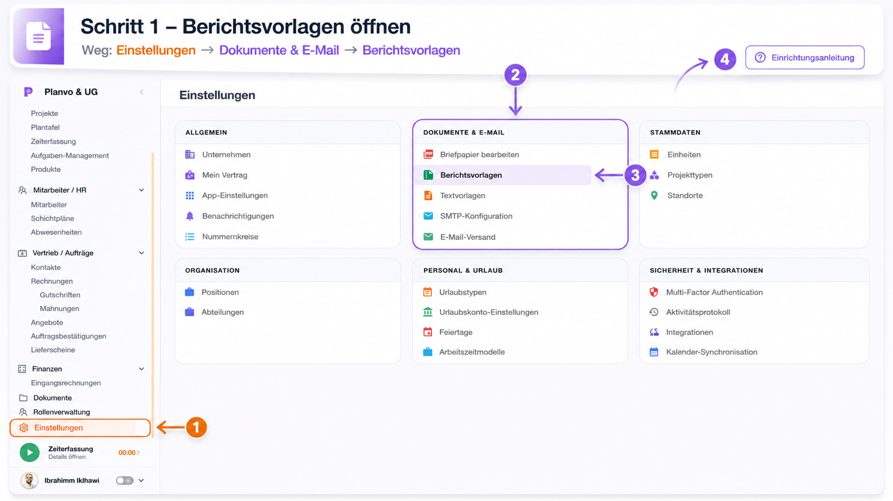
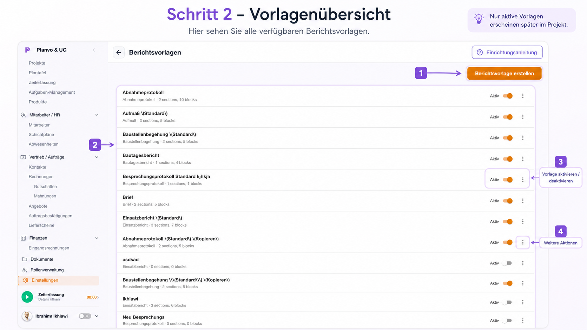
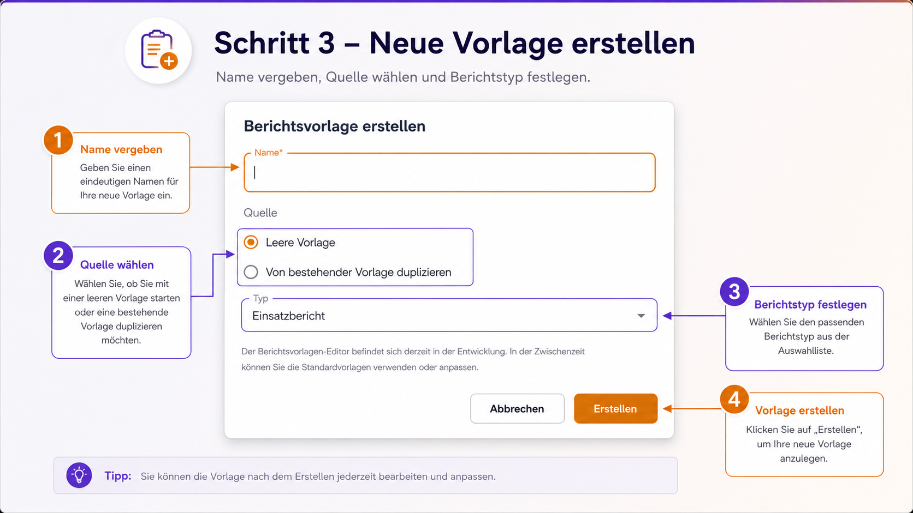
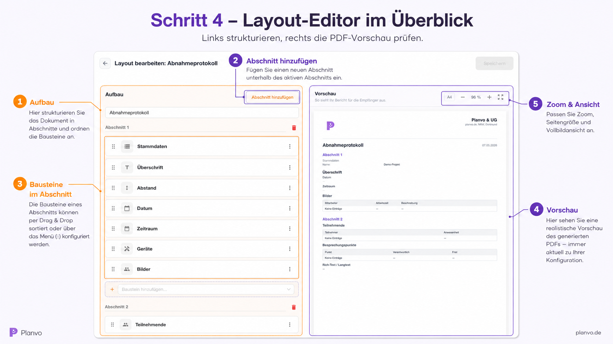
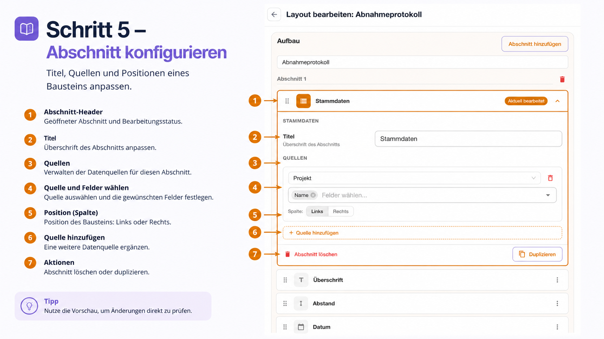
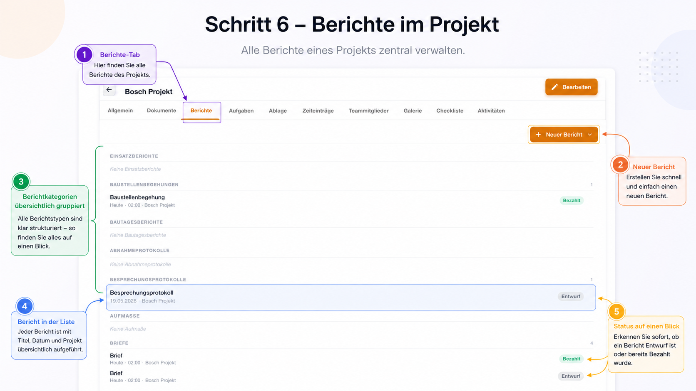
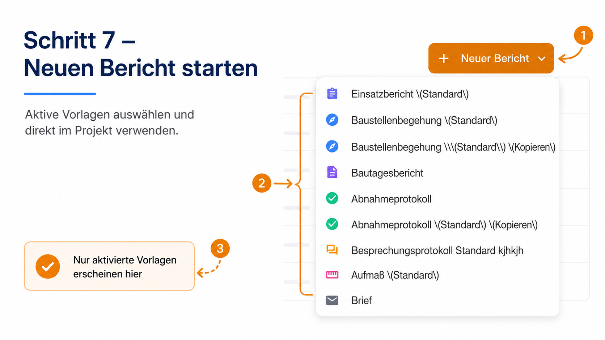
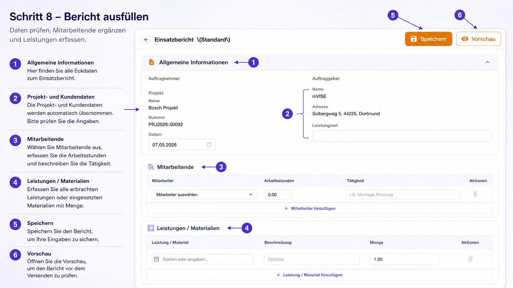
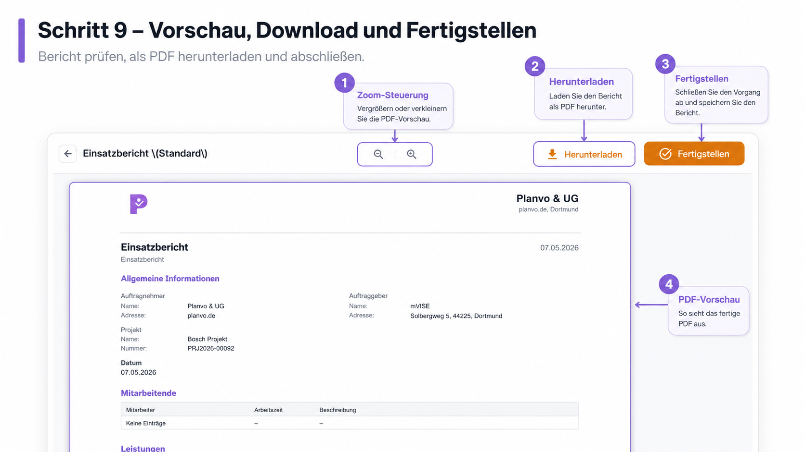

Berichte (Web)¶
⏱️ Lesezeit: 10 Minuten
📱 Verfügbar in: Web
👤 Für: Projektleiter, Techniker, Administratoren
📋 Was Sie in diesem Kapitel lernen¶
- ✅ Wo Sie Berichtsvorlagen in den Einstellungen finden und verwalten
- ✅ Wie Sie eine neue Vorlage anlegen und im Layout-Editor bearbeiten
- ✅ Wie Sie Berichte im Projekt anlegen, ausfüllen und abschließen
- ✅ Wie Sie die PDF-Vorschau nutzen, herunterladen und fertigstellen
🎯 Übersicht¶
Mit dem Berichtsmodul erstellen Sie professionelle PDFs direkt aus dem Projekt — inklusive Projektdaten, Kundendaten und Ihrem Firmenlogo aus den Unternehmenseinstellungen.
- Vorlagen zentral – Aufbau und Bausteine definieren Sie unter Einstellungen
- Daten aus dem Projekt – Viele Felder werden automatisch befüllt
- PDF jederzeit – Vorschau, Download und Abschluss in wenigen Klicks
Die folgenden neun Schritte führen Sie von den Einstellungen bis zum fertigen PDF. Zu jedem Schritt gibt es einen Screenshot mit Erklärungen.
Schritt 1 – Berichtsvorlagen öffnen¶
Weg: Einstellungen (Seitenleiste) → Karte „Dokumente & E‑Mail“ → „Berichtsvorlagen“
Optional finden Sie auch Hilfe unter „Einrichtungsanleitung“ oben rechts auf der Einstellungsseite.

Was Sie hier sehen: die Übersicht Einstellungen mit den Karten (z. B. Allgemein, Dokumente & E‑Mail). Unter Dokumente & E‑Mail wählen Sie den Eintrag Berichtsvorlagen, um die Vorlagenverwaltung zu öffnen.
Schritt 2 – Vorlagenübersicht¶
Nach dem Öffnen der Berichtsvorlagen sehen Sie die Liste aller Vorlagen.

| Bereich | Bedeutung |
|---|---|
| Berichtsvorlage erstellen | Legt eine neue leere oder duplizierte Vorlage an |
| Vorlagenliste | Name, Kurzinfo (z. B. Anzahl Abschnitte/Bausteine) |
| Aktiv / Inaktiv | Nur aktive Vorlagen erscheinen später bei „Neuer Bericht“ im Projekt |
| Drei-Punkte-Menü (⋮) | Weitere Aktionen zur jeweiligen Vorlage |
Merksatz
Nur aktive Vorlagen stehen Ihrem Team im Projekt zur Auswahl — inaktive Vorlagen blenden Sie gezielt aus.
Schritt 3 – Neue Vorlage anlegen¶
Klicken Sie auf „Berichtsvorlage erstellen“. Es öffnet sich ein Dialog.

- Name* – Ein eindeutiger Name für die Vorlage (Pflichtfeld)
- Quelle – Entweder „Leere Vorlage“ oder „Von bestehender Vorlage duplizieren“
- Typ – Wählen Sie den passenden Berichtstyp aus der Liste (bestimmt die verfügbaren Bausteine und das Verhalten im Formular)
- Erstellen – Legt die Vorlage an; Sie können sie danach im Layout-Editor bearbeiten
Abbrechen schließt den Dialog ohne Änderungen.
Tipp
Nach dem Anlegen können Sie die Vorlage jederzeit im Layout-Editor anpassen und speichern.
Schritt 4 – Layout-Editor im Überblick¶
Im Layout bearbeiten-Modus sehen Sie zwei Bereiche: links den Aufbau, rechts die PDF‑Vorschau.

Links – Aufbau
- Abschnitte strukturieren das Dokument (Kapitel im PDF)
- Pro Abschnitt: Bausteine mit Symbol, Namen und ⋮-Menü
- Bausteine per Drag-Handle (sechs Punkte) sortieren
- „Baustein hinzufügen …“ – weiteren Baustein in diesem Abschnitt einfügen
- Abschnitt hinzufügen – neuen Abschnitt unterhalb einfügen
Rechts – Vorschau
- Zeigt das PDF so, wie es später aussehen kann (Logo, Überschriften, Tabellen)
- Zoom, Seitengrößenauswahl (z. B. A4) und Vollbild nach Bedarf
Oben in der Leiste: Zurück, Titel „Layout bearbeiten: …“ und Speichern.
Schritt 5 – Baustein konfigurieren (Beispiel: Stammdaten)¶
Klicken Sie auf einen Baustein (z. B. Stammdaten), um ihn zu bearbeiten. Die detaillierten Einstellungen erscheinen im Aufbau-Bereich.

| Nr. | Thema | Erklärung |
|---|---|---|
| 1 | Header | Welcher Baustein gerade bearbeitet wird (Status z. B. „Aktuell bearbeitet“) |
| 2 | Titel | Überschrift dieses Bausteins im PDF |
| 3 | Quellen | Welche Datenquellen verwendet werden (z. B. Projekt, Kunde, Unternehmen) |
| 4 | Quelle & Felder | Pro Quelle: welche Felder angezeigt werden |
| 5 | Spalte | Darstellung links oder rechts (zweispaltiges Layout im PDF) |
| 6 | Quelle hinzufügen | Weitere Datenquelle für denselben Baustein |
| 7 | Aktionen | Z. B. Abschnitt löschen oder Duplizieren |
Tipp
Prüfen Sie Änderungen sofort in der rechten Vorschau — so sehen Sie das Layout ohne den Editor zu verlassen.
Andere Baustein-Typen (Freitext, Checkliste, Tabellen, Aufmaß, Skizzen, Unterschrift usw.) funktionieren nach dem gleichen Prinzip: Baustein auswählen, im Aufbau die passenden Optionen setzen, Vorschau prüfen, Speichern.
Schritt 6 – Berichte im Projekt¶
Öffnen Sie ein Projekt und wechseln Sie in den Tab „Berichte“.

| Bereich | Erklärung |
|---|---|
| Tab „Berichte“ | Zentrale Übersicht aller Berichte dieses Projekts |
| „+ Neuer Bericht“ | Startet die Auswahl einer aktiven Vorlage |
| Gruppierung | Berichte können nach Typ oder Kategorie übersichtlich sortiert sein |
| Einzelner Bericht | Titel, Datum, Projektbezug auf einen Blick |
| Status | Z. B. Entwurf oder abgeschlossen — je nach Konfiguration weitere Stellen (Badges rechts in der Liste) |
Schritt 7 – Neuen Bericht starten¶
Klicken Sie auf „+ Neuer Bericht“. Im Dropdown erscheinen alle aktivierten Vorlagen.

- Jede Zeile ist eine Berichtsvorlage (mit Icon und Namen)
- Nur Vorlagen, die in den Einstellungen aktiv sind, erscheinen hier
Wählen Sie die gewünschte Vorlage — es öffnet sich das Berichtsformular.
Schritt 8 – Bericht ausfüllen¶
Das Formular folgt der Struktur Ihrer Vorlage: Abschnitte und Bausteine wie im Layout-Editor definiert.

Typische Bereiche (je nach Vorlage):
- Allgemeine Informationen – z. B. Auftragnehmer, Auftraggeber, Projekt, Datum
- Projekt- und Kundendaten – oft automatisch aus dem Projekt; bitte kurz prüfen
- Mitarbeitende – Mitarbeiter wählen, Arbeitsstunden und Tätigkeit erfassen; Zeilen über „Hinzufügen“ ergänzen
- Leistungen / Materialien – erbrachte Leistungen oder Material mit Menge und Beschreibung; wieder per „Hinzufügen“ erweiterbar
Oben rechts:
- Speichern – sichert den Bericht (z. B. als Entwurf)
- Vorschau – öffnet die PDF-Vorschau mit Ihrem Layout
Speichern Sie regelmäßig, besonders bei langen Berichten.
Schritt 9 – Vorschau, Download und Fertigstellen¶
In der Vorschau sehen Sie das PDF wie für den Druck oder Versand.

| Bereich | Funktion |
|---|---|
| Zoom (− / +) | PDF vergrößern oder verkleinern |
| Herunterladen | PDF auf Ihrem Gerät speichern |
| Fertigstellen | Bericht abschließen; danach ist er in der Regel nicht mehr bearbeitbar |
| PDF-Inhalt | Entspricht Ihrer Vorlage: Überschriften, Tabellen, Logos, automatische Felder |
Zurück (Pfeil oben links) bringt Sie in der Regel zurück zum Formular, falls Sie noch etwas korrigieren möchten.
Wichtig vor Fertigstellen
Prüfen Sie Inhalt und PDF-Vorschau. Ein fertiggestellter Bericht kann nicht mehr nachträglich geändert werden — Erstellung eines neuen Berichts ist dann die saubere Lösung bei Korrekturwünschen.
Unterschriften (optional)¶
Wenn Ihre Vorlage Unterschriften-Bausteine enthält und die Oberfläche es vorsieht, können Sie digitale Unterschriften erfassen (z. B. nach dem Speichern eines Entwurfs). Hinweise dazu finden Sie am jeweiligen Button „Unterschriften“ im Bericht — die genaue Position hängt vom Berichtsstatus und der Vorlage ab.
🔄 Kurze Szenarien¶
- Projekt → Berichte → Neuer Bericht → Einsatzbericht
- Daten prüfen, Mitarbeiter und Leistungen eintragen
- Speichern → Vorschau → Herunterladen oder Fertigstellen
- Einstellungen → Dokumente & E‑Mail → Berichtsvorlagen
- Berichtsvorlage erstellen oder bestehende duplizieren
- Im Layout-Editor Abschnitte und Bausteine anpassen → Speichern → Vorlage aktivieren
❓ Häufige Fragen¶
Warum sehe ich eine Vorlage im Projekt nicht?
Vermutlich ist sie deaktiviert. Unter Einstellungen → Berichtsvorlagen den Schalter auf aktiv setzen.
Kann ich eine Vorlage nachträglich ändern?
Ja. Änderungen gelten typischerweise für neue Berichte; bereits erstellte PDFs bleiben unverändert.
Wo kommt das Firmenlogo im PDF her?
Aus den Unternehmenseinstellungen (Logo-Upload). Ohne Logo erscheint ggf. nur Text im Kopf.
Kann ich einen fertigen Bericht noch bearbeiten?
In der Regel nein nach Fertigstellen. Ansonsten einen neuen Bericht mit derselben Vorlage anlegen.
📋 Schnell-Referenz¶
| Aufgabe | Weg |
|---|---|
| Berichtsvorlagen öffnen | Einstellungen → Dokumente & E‑Mail → Berichtsvorlagen |
| Neue Vorlage | Berichtsvorlage erstellen → Name, Quelle, Typ → Erstellen |
| Vorlage bearbeiten | Vorlage öffnen / Zeile klicken → Layout bearbeiten → Speichern |
| Vorlage im Projekt sichtbar | Schalter Aktiv in der Vorlagenliste |
| Neuen Bericht | Projekt → Tab Berichte → + Neuer Bericht |
| PDF prüfen | Vorschau im Bericht |
| PDF speichern | Herunterladen in der Vorschau |
| Bericht abschließen | Fertigstellen in der Vorschau |
| Logo pflegen | Einstellungen → Unternehmen / Firmendaten → Logo |
🆘 Brauchen Sie Hilfe?¶
-
Live-Chat
Schnelle Antworten während der Geschäftszeiten
-
E-Mail Support
Detaillierte Anfragen per E-Mail
Letzte Aktualisierung: Mai 2026 | Version 2.1 (9-Schritte-Anleitung mit Screenshots)